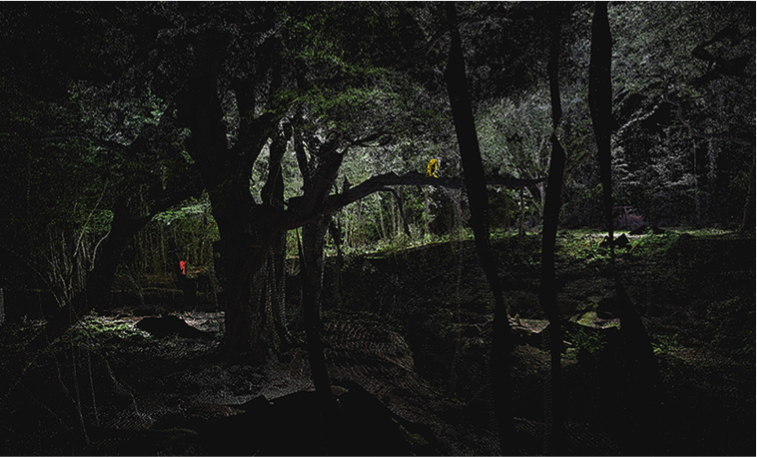

Biomorphological Realism: Thinking with Biological Entities in Film and Digital Media
Yvette Granata
yvettegr [at] buffalo [dot] edu
SUNY Buffalo, Department of Media Study
Abstract
This paper revisits the work of realism in early film theory (Bazin, Kracauer, Eisenstein) and charts the early realists’ work on cinematic specificity as a ‘biomorphological realism.’ By looking to emphasis placed in their own work on biological life, I chart the way that early film theorists looked to cinema as inherently unfolding in tandem with the life and death of animal and biological entities. Such a re-reading of early film theory challenges recent ontological turns in theories of digital cinema (Doane, Rodowick, Manovich), which have shifted emphasis to the immaterial basis of the digital image and its corresponding virtual reality. Thinking instead with a ‘biomorphological realism,’ this paper extends a different analysis of contemporary digital media. Looking to the digital media art piece Datum Explorer by Universal Assembly Unit, created with digital forest spectrography technology as motion imagery, and Terike Haapoja’s project In and Out of Time, based on digital thermal camera images that trace the heat of cooling dead animals, new emphasis is placed on analysis that ontologically shifts towards early filmic realism to re-think digital media specificity. Ultimately, the paper argues for a biomorphological view as in line with the increasingly calibrated media technologies designed to be attuned to capture the life and death of animal and biological entities.
Abstract
This paper revisits the work of realism in early film theory (Bazin, Kracauer, Eisenstein) and charts the early realists’ work on cinematic specificity as a ‘biomorphological realism.’ By looking to emphasis placed in their own work on biological life, I chart the way that early film theorists looked to cinema as inherently unfolding in tandem with the life and death of animal and biological entities. Such a re-reading of early film theory challenges recent ontological turns in theories of digital cinema (Doane, Rodowick, Manovich), which have shifted emphasis to the immaterial basis of the digital image and its corresponding virtual reality. Thinking instead with a ‘biomorphological realism,’ this paper extends a different analysis of contemporary digital media. Looking to the digital media art piece Datum Explorer by Universal Assembly Unit, created with digital forest spectrography technology as motion imagery, and Terike Haapoja’s project In and Out of Time, based on digital thermal camera images that trace the heat of cooling dead animals, new emphasis is placed on analysis that ontologically shifts towards early filmic realism to re-think digital media specificity. Ultimately, the paper argues for a biomorphological view as in line with the increasingly calibrated media technologies designed to be attuned to capture the life and death of animal and biological entities.
Introduction
In their descriptions of medium specificity, early realist film theorists invoked terms of biological bodies—from animal and plant-life to disease and death—as analogous and homologous to cinema. Walter Benjamin, in specifying cinematography from painting, posed the analogy of the surgeon, stating that the “[m]agician is to surgeon as painter is to cinematographer. The painter maintains in his work a natural distance from reality, whereas the cinematographer penetrates deeply into its tissue” (116). In speaking of montage, Sergei Eisenstein invokes a homology of the assemblage of tissues of an organism to film, in that a “shot is a montage cell … its embryo” (“Beyond” 144), and the mise-en-scène of film contains the “bones … [a] linear skeleton, whose function is to embody the ‘Real Form,’ the ‘generalized essence of the phenomenon’” (“Montage” 28). Siegfried Kracauer opens his Theory of Film by looking to Cook and Bonnelli’s “photobioscope,” quoting them on its potential to provide “a complete revolution of photographic art” in that it will show “the trees bow to the whims of the wind, the leaves ripple and glitter in the rays of the sun” (“Theory” 27). Lastly, André Bazin provides a direct connection between cinema and biological phenomenon in his analysis of Pierre Braunberger’s film The Bullfight, arguing cinematic specificity primarily as one of a biological distinction, stating that “death is surely one of those rare events that justifies the term … cinematic specificity” (“Death” 30). In speaking of biological tissues, plants, embryos, animals, and death, it is not the body tissue of the spectator’s sensory response nor the experience of the viewer that is described, but the activity of the filmmaker in relation to and amid the “natural” world. Whereas in Laura Marks’ The Skin of the Film, for example, a theory of “skin” is the haptic experience of the surface of the screen aesthetics. The invocation of “tissue” in early film theory, however, is not a description of the spectator’s bodily response to the film on screen, but is the biomaterial that the filmmaker works with and amid the world. In this way, early film theorists construct an ontology of cinema that is produced by its immersion in the nature of things, or the lifeworld. I thus argue that cinematic specificity for early film theorists is activity within a biosphere. With the advent of digital sensor technologies in media arts that penetrate the biosphere in new ways, such as with thermal camera imagery, forest spectrography, and biometric sensor data, I argue that the realism of early film theory is useful for newly conceptualizing digital cinema and media arts as a biomorphological media.
The argument in this paper will unfold in two sections. In the first section of this paper, I will trace the early realist film theorists and their approach to cinematic specificity in order to revisit their concern with the biosphere and realism of cinema. Although less highlighted in film theory discourse, I will argue that, as opposed to a focus on technological capture and the materiality of the index, early realist film theorists emphasized cinematic specificity as a creative activity in relation with and a part of the lifeworld. As opposed to contemporary theories of digital media, in which a shift in the ontological status of the image has occurred that moves to the numerical entity as an immaterial and abstract body, I attempt to think along with the early film theorists by extending analysis to contemporary digital imagery practices. I look with early film theory at examples of new digital photography in forest spectrography, and to the new media projects, Datum Explorer by Universal Assembly Unit, and Terike Haapoja’s project In and Out of Time, based on digital thermal camera images that trace the heat of cooling dead animals. Through looking at contemporary digital media, my aim is to again theorize cinematic specificity alongside the life, and death, of the biological and animal body, and call for a new thinking of digital media realism.
Early Film Theory: Realism and the Life-World
Beginning with André Bazin’s cinematographic specificity, he puts forth a note on the chemical process of film, making an analogy of the film strip firstly to “a mummy, tanned and petrified in sodium” and to other materials capable of “embalming,” or preserving an imprint of life, such as “terra cotta statuettes” and “the arrow-pierced clay bear to be found in pre-historic caves” (“What is Cinema” 195). From such historical material processes, Bazin makes the ontological parallel to photography and film, speaking specifically of the chemical evolution of film processes, “after the discovery of gelatin-bromide of silver but before the appearance on the market of the first celluloid reels, Marey had made a genuine camera which used glass plates” (“What is Cinema” 200). Even though Bazin’s commentary on the material imprint may be read as a concern with the ontology of the index or imprint of materiality—often discussed of the photographic index — Bazin's emphasis shifts from the materiality of the film strip to the relationship between the photographer and the animal. In speaking of Muybridge and Marey, Bazin places emphasizes not on the technological invention of image capture as central to cinema, not on the film strip or camera, but rather states that, “Muybride, thanks to the imaginative generosity of a horse-lover, managed to construct a large complex device which enabled him to make from the image a galloping horse, the first series of cinematographic pictures” (“What is Cinema” 200). Bazin places primacy on the imagination of the horse-lover, as opposed to the technological mechanism of image capture, claiming of the camera itself that it is simply a “matter of setting in order a mechanism far less complicated than an eighteenth-century clock” (“What is Cinema” 200). The relationship between the imagination of the horse-lover and the horse is where Bazin firmly situates the foundation of cinema, claiming ultimately “the myth of Icarus had to wait on the internal combustion engine before descending from the platonic heavens. But it had dwelt in the soul of every man since he first thought about birds” (“What is Cinema” 202). The thought of birds, the relationship between horse-lover and photographer, is where Bazin more emphatically theorizes cinematic specificity. The cinema is indebted to the imagining of the Zoo (the animal world) and the Zoe (the life world) for its very appearance. Bazin’s cinema is a world that is therefore crafted by the zoosphere—it is the cinema that is the object or product of having had interest in animals. Bazin’s cinematic specificity is grounded firstly in this claim—cinema’s historical appearance is a result of the interest in the motion of horses.
Similar to Bazin, when beginning to theorize on the specificity of film, Kracauer notes that “[its] birth came about from a combination of instantaneous photography, as used by Muybridge and Marey, with the older devices of the magic lantern and the phenakistoscope” (“Theory” 27). As opposed to focusing on the material of the film strip itself, such as the chemical processes, Kracauer quickly lays out his version of a media history of the cinema—the magic lantern, the phenakistoscope, Muybridge—and turns instead to look at what is enabled by the motion image itself, stating that “any medium is partial to the things it is uniquely equipped to render, the cinema is conceivably animated by a desire to picture transient material life” (“Theory” xlix). Thus, Kracauer does not linger on the rendering process of image within the devices, at the level of film strip, but instead aims “at tracing the peculiar properties of the medium,” and points out of his own work “my book differs from most writings in the field in that is a material aesthetics, not a formal one. It is concerned with content” (“Theory” xlix). The “content” that film is apt to capture is the material of the zoosphere to which the filmmaker is attracted. As such, Kracauer, in line with Bazin, states of the filmmaker that “such art as goes into films results from their creators’ capacity to read the book of nature. The film artist has traits of an imaginative reader, or an explorer prompted by insatiable curiosity” (“Theory” i). In closing his introduction to film, Kracauer thus asks of the medium, “Perhaps the cinema helps us to move from ‘below’ to ‘above’? It is indeed my contention that film … meets our inmost needs precisely by exposing—for the first time, as it were—outer reality and thus deepening, in Gabriel Marcel’s words, our relation to ‘this Earth which is our habitat’” (ii). While it may seem that Kracauer takes for granted an imprint of “reality” upon the film strip, or adopts a naive realism, this is not the case. Kracauer differentiates between the “realistic” and the “formal.” In doing so, he does not claim that photography is equal to “outer reality”—manipulations come along with it as with any medium. Kracauer points out that formalism and photographic simulation can nonetheless expose “outer reality.” Like Bazin (and Benjamin’s analogy of the cinematographer-surgeon), Kracauer emphasizes that for the filmmaker, “creativity manifests itself in letting nature in and penetrating it” (40; emphasis added). The emphasis of cinematic specificity is once again here named as the relationship between lifeworld and the activity of the filmmaker, where firstly nature penetrates the filmmaker. For Kracauer, the cinema “creatively manifests itself”—it is an object constructed by the lifeworld, the biosphere, the zoosphere, as opposed to a technological apparatus that henceforth constructs an object of nature.
Although Kracauer and Bazin begin with the technological material processes, their interests do not revolve around issues presented by image capture technology, such as chemical reactions and energy conversion at the molecular level of the film strip. Instead, as Bazin notes, the consensus of many early film theorists seems to be that “any account of the cinema that was drawn merely from the technical inventions that made it possible would be a poor one indeed” (200). Sergei Eisenstein likewise affirms this notion. Instead of looking to the chemical process of the strip, Eisenstein speaks of that which leads his camera as a filmmaker himself—the conflicts present in forms of life. For Eisenstein, that which is captured on the film is the conflict present in life-materiality before him, explaining to us: “To create a dramaturgy of visual film form, that is determined in the same way as the existing dramaturgy of film material” (“Dramaturgy” 172). In line with Bazin and Kracauer, Eisenstein sees a theory of film based on a logic of its technological device as not only a poor one, but also an inert one, stating,
Because of its nature, [art] consists in the conflict between natural being and creative tendentiousness. Between organic inertia and purposeful initiative. The hypertrophy of purposeful initiative — of the principle of rational logic — leaves art frozen in mathematical technicism (Landscape becomes topography, a painting of St Sebastian becomes an anatomical chart.) Hypertrophy of organic naturalness — of organic logic — dissolves art into formlessness. (161)
Eisenstein emphasizes the relationship between filmmaker and the “organic naturalness,” or the “organic logic,” of the world. For Eisenstein, the filmmaker follows the organic logic of conflicts already present in nature and selects, whether it is a conflict of visual form, of thematic clashing, or of class conflict. For example in charting out the “conflicts of film forms,” Eisenstein gives the various kinds: graphic conflict, conflict between planes, spatial conflict, conflict in lighting, conflict in tempo (168). The Eisenstein film does not invent its own conflict, but instead selects them from the material world, visually, spatially, temporally, or otherwise. Such can be seen in his criticism of Pudovkin, who employs literary parallel intercutting in the film The End of St. Petersburg. Of this technique, Eisenstein says, “This method may decay pathologically if the essential viewpoint—the emotional dynamisation of the material—gets lost. Then it ossifies into lifeless literary symbolism and stylistic mannerism” (176). This type of “literary symbolism” in filmmaking Eisenstein further describes as, “a purely literary parallelism … [which] does nothing to enliven the material” (176). In this way, according to Eisenstein, the filmmaker who is in line with the specificity of cinema, as opposed to literature, selects fragments of conflicts in nature as they exist, from which a film is then constructed. Cinematic specificity inherently places the filmmaker into a circuitry of the lifeworld for Eisenstein. If the filmmaker does not tap into this circuitry, film becomes more in line with other artistic disciplines, such as literature.
By bracketing the technological basis of image capture as a result of, and not as the ontology of cinema, Bazin, Kracauer, and Eisenstein move away from the focus of technological ontologies, turning instead to look at what the life-material of cinema itself allows for. The creative relation of lifeworld and the activity of the filmmaker within it is the essential core of cinematic specificity for these early realist film theories. Filmic realism as such, I argue, necessitates the inclusion of animal and biological bodies—their relation is necessary—and not an accidental material or object after-the-fact of technological invention. Therefore, early film theory poses a cinematic specificity that can be thought of as a type of biomorphology, both productive and produced by creativity embedded in the world as a part of the natural world, the zoosphere, and the biosphere.
Contemporary Film Theory: Realism and the Numerical Entity
With the advent of digital image technology, the notion of “immateriality” has produced an ontological shift in the conversation on medium specificity. The appearance of digital image technology has seemingly produced a material loss in motion imagery; the “immaterial” has led contemporary film theorists away from the biological entity, and away from life-materiality, towards the numerical entity. This ontological shift that has occurred in thinking medium specificity largely stems from the stronghold of theories that center around the index as tied to its technological mechanism. Contemporary film theory has shifted from “life-material realism,” towards binary-code—the immaterial basis of the image—and thus shifted towards a “numerical realism.” In this way, contemporary film and media theory posits digital imagery as an abstract relation, no longer in direct alliance ontologically to the biological entities posed by earlier thinkers.
Theorists such as Mary Ann Doane, David Rodowick, and Lev Manovich, have sought to revise theories of cinematic specificity by theorizing along with this immaterial condition of cinema. The analogies used in discussion of medium specificity have thus markedly changed across media scholarship—from the biological body of the early theorists to those of numbers, abstract entities, and “synthetic” production. Just as Bazin related biological death to cinema, not by analogy but as a distinction of the medium, contemporary film theorists likewise relate numbers to cinema. Doane puts forth that “the digital seems to … [proffer] the vision (or nightmare) of a medium without materiality, of pure abstraction incarnated as a series of 0s and 1s,” and that, “Even light, that most diaphanous of materialities, is transformed into numerical form in the digital camera” (Doane 142). Rodowick likewise puts forth that “the transformation of matter in the electronic and digital arts takes place on a different atomic register and in a different conceptual domain. Where analog media record traces of events … digital media produce tokens of numbers” (Rodowick 24). Lastly, Lev Manovich offers the view of digital photography as synthetic photography, posing that “we can try to construct three-dimensional reality … and then take a picture … in other words, 3-D computer graphics can also be thought of as digital—or synthetic—photography” (Manovich 246). Discourse on cinematic specificity has thus taken an ontological turn, by which theorists articulate medium specificity solely, or mainly, in terms of the conceptual domain of the numerical entity—one that seems to carry no sense of body, life, or death.
The exchange of biological for the numerical entity has, of course, steered the direction theoretical analysis. Rodowick brings this to light in relation to early film theorists, noting that “what remains absent from the process of digital representation is what thinkers like André Bazin or Roland Barthes held fundamental to the photographic image: its causal force as a literal spatial and temporal molding of the originating event” (26). While mentioning what is fundamentally left out of the question, Rodowick does not place the lacuna in the ontological shift of theory itself, but rather places this absence as a result of “the process of digital representation itself.” Thus, the historical aspect and relation to biological life that was fundamental for early film theorists is argued to be unavoidably removed for digital film theory. However, to look back at early film theory, such as with Kracauer, this notion was already accounted for. Kracauer had also identified the possibility of the removal of life-material contingency in relation to film photography, stating that “as consciousness becomes more and more aware of itself and in the process the originary ‘identity of nature and man’ dissolves, the meaning of the image becomes increasingly abstract and immaterial” and thus he further warns that “consciousness, which disengages itself from nature stands against it” (“Photography” 60-61). The ontology of cinematic specificity—as tied to the digital process of capture technology—need not, however, move beyond the relation of life-materiality. By focusing on the level of the technological process of digital camera data storage, contemporary theory has thus seemingly maneuvered away from thinking the digital image as also produced by the life-material world, placing it instead firmly as produced by immaterial grounds.
Digital Biomorphological Media
Before turning to argue for the digital as biomorphological realism, I return to Bazin to emphasize the manner in which early realist film theory goes beyond both analog and digital capture analyses. Looking to the essay, “Death Every Afternoon,” which centers around an analysis of Pierre Braunberger’s film The Bullfight, I emphasize Bazin’s strongest argument: that the motion image medium can both capture and replay the exact moment of death of a biological entity as the aspect that most defines the cinema. Here is where Bazin lays out cinema as inherently tied to the biological phenomenon that it is apt to portray—a motion image unfolding temporally, corollary to, and as a witness of, an organism’s life. Bazin tells us, “I have never been to a bullfight, and it would be ridiculous of me to claim that the film lets me feel the same emotions, but I do claim that it gives me its essential quality, its metaphysical kernel: death” (“Death” 29). It is not only the moment of death, but the circuitry of animal, human, and death that Bazin further extends as an essential quality of the cinema—“the tragic ballet of the bullfight turns around the presence and permanent possibility of death (that of the animal and the man). That is what makes the ring into something more than a theater stage: death is played on it” (“Death” 29). The editing of the film, which edits across multiple clips of different bull fights cut together as if they are one, shows a larger time frame, a portrayal of many similar events across time, but always the same dance in the ring between human and animal, and always ending in death (of the bulls). Because of this, what is thus at stake in the cinematic image for Bazin is the possibility for a metaphysicial obscenity—for the possibility of playing death backwards, running the film reel in reverse, showing the Bull become un-dead and man as never in trouble of perishing. This metaphysical obscenity is the manner in which the ontology of cinema is not only built out of the life-world, but moreover that it is a morphological object to it. It is molded in time as a morphological structure, similar in temporality and direction to that of the bull’s reality. The film unfolds, and plays the life and death of the animal, but it cannot go backwards just as the real bull cannot be made undead. Even if the film were to be played in reverse, we do not grasp a process of becoming undead. We merely see a bull get up from the ground, animated as if it were temporarily injured. It is thus the immateriality of death that is captured in this analog film, the metaphysical kernel that Bazin places most emphasis on. Moving between the realism of early film theory and contemporary theory, we may see what is missing from contemporary theories that frame the ontology of film as abstract code: it is not only moving away from the material, but also the biologically immaterial. In other words, death is what is missing from a filmic ontology framed as completely abstract. In order to think again with Bazin’s biological distinction and metaphysical kernel of the realism of motion imagery, I turn to look at new sensory technology of digital image capture that also calls for analysis beyond the zeros and ones.
I turn to examples of digital photography that are not insular but ubiquitous in contemporary culture—in medical and environmental science—in order to address the manner in which new media can be thought as biomorphological media in line with early realist film theory. I will thus name a few contemporary digital photography techniques in order speak to the line crossed with early film theory, albeit extended differently—in digital manner. Turning to the field’s use of digital photography then, we find an array of medium specificities stemming from its material capabilities: in recent mammography practice, for example, digital cameras have allowed for a more detailed penetration of dense tissue than X-ray film, generating better diagnoses for breast cancer.1 In the field of dermatology, digital photography is used to track changes in the skin and to view more details in skin aberrations.2 In environmental sciences, new digital photography techniques have been used to study the density of light within forest environments at greater levels of detail, beyond human visual perception, and over longer periods of time than previously.3 And lastly, in biological sciences, digital photography has allowed for the study of animal coloration on the spectral level, allowing for new understandings of colors found on animals and the ability to reconstruct “particular models of nonhuman visual processing (such as that of a passerine bird)” (Stevens et al 211). While the benefits for science and medicine are clear, these new levels of penetration, light capture, and coloration offer new sites for theorizing the material relation between image, biological body, and film and media culture.
Figure 1: In and out of Time, Terike Haapoja. Video diptych, 2005. Duration 4.5 hours. Photographed at the Helsinki City Art Museum.
In order to think along with early realist film theory and contemporary practices in digital photography, I look to Terike Haapoje’s In And Out Of Time (see figure 1). The video piece uses thermo-camera imagery that traces the cooling of a dead animal body, placed next to a video taken with a non-thermo camera. It consists thus of a relation of the two image tracks, with the spectator in the middle to draw the comparison. The thermo-image shows us the slow cooling of the animal body of a calf found in the snow. The heat slowly changes in real-time as life leaves the animal. The other screen shows, in a mirror image, the same cow recorded by an ordinary video camera, where the animal’s death is not dynamically changing, but already a moment that has passed—like Bazin’s bulls. The image tracks are synched in time and last for 4.5 hours. Over the course of the five hours, the cow’s body cools down until it is no longer visible to the thermo camera.4 As opposed to Bazin’s bulls, the calf is already dead when the piece begins. We have never witnessed the moment of death, only the duration of dying.
To look at Haapoje’s piece with numerical digitality as the defining feature of its medium specificity, instead of with the realism of early theorists, would be to remove the central force of the work. Despite its digital sensor converting heat data into zeros and ones, and despite its data being converted into a simulation of heat via the pseudo-color of thermal technology coloration, death is not then made more abstract, but more saturated. Here, in Haapoje’s work, we must watch in filmic real-time in order to fully witness the biological process of life slowly leaving an animal body. It is no longer a moment that cannot be played backwards, but five hours of a biomorphological durée to be watched slowly. In this way, digital media here amplifies the realism of Bazin’s motion imagery claim: I have never seen a dead calf in the snow slowly becoming cold from death, but I can sit and watch its metaphysical kernel for hours. It is not with gore or obscenity, but with the minutiae of digitality of contemporary sensory technology that such a relation is produced. In this way, new media may be even more apt for biomorphology, the temporal unfoldings alongside the life of organisms, operating further as a medium of duration just like the organism’s life. As Benjamin said of Kracauer’s work, it is a case perhaps where “reality is pressed so closely that it is compelled to declare its colors and name names.”
Similar to Bazin’s inclusion of “man” and our relation to the life and death of the animal—that the death of the bull reminds us of our own, and that we are part of the same circus ring, is in line with Haapoje’s work. The spectator is imbricated into the space between the two images, revealing to us our place in a ring. As we watch the real-time slowness of death, we are placed into its kernel: we are heated bodies too, and we will cool down slowly too when we die. Thus it is not that the contemporary digital image merely reminds us more succinctly of death, or with more detail, but rather of the biomorphic similarity of animal, human, and death that Bazin extended as an essential quality of cinema. A biomorphological realism is thus fully a quality of digital media, and with it we may in fact be forced to re-think the relation of the digital and the materiality of the life-and-death-world.
In addition to Bazin, we may again revisit Eisenstein’s theory, in which cinema creates a “biomorphic hallucination” between artist, image, and the content of the “natural” world. In his work on animetaphor, Akira Lippit points out that, “Vertov and Eisenstein argue for a biology of the cinema, for an understanding of cinema as organism” (194). From Eisenstein, Lippit further adds that, “the characteristics with which he [Eisenstein] describes the medium, ‘reflex physiological essence’ and ‘higher nervous activity,’ [which] apply to the filmwork itself rather than to its spectator. One senses in Eisenstein’s cinema a biomorphic hallucination. Films exist here as complex organism—that have become animal, or animetaphor” (195). Although Lippit’s work draws out a metaphoricity of animal, in Eisenstein’s work, the human is “direct animal.” Comparing the realism of the liveness of the theater and the realism of the cinema, Eisenstein notes that the effect of murder on a theater stage is “achieved primarily through the physiological perception of an actually occurring fact (e.g. a murder)” (“Montage” 41). As he explains in the footnote after stating “e.g. a murder,” the theater murder is “a direct animal audience action through a motor imitative act” (“Montage” 41). The theater for Eisenstein, who was also a theater director, incorporates the audience as a part of the theatrical object, and murder on stage is “an actually occurring fact” because the audience is literally present as a “direct animal” within the theater object, as opposed to a film. For Eisenstein, there is an audience in the cinema, but the cinema audience is not present in the film work itself (“Montage” 41).
Instead, the film murder is within the film as is own physiological motor-circuitry where, “a throat is gripped, eyes bulge, a knife is brandished, the victim closes his eyes, blood is splattered on a wall” (“Montage” 41). For Eisenstein, the animal is not a metaphor, but either a description of the human audience as acting to produce the realism of a theater stage murder, or in film, it is the film itself that is an organism. The “biomorphic hallucination” is therefore not the unrealism of the cinema, not a dream of illusions, but instead a description of its biomorphology—the film is similar in kind to the biological systems of physiology of the human and animal. The realism of a biomorphology is therefore not tied to a “documentary” filming of actual events, the scene of a fictional murder is not unreal for Eisenstein. Instead, a film is a biomorphic realism in that it is a “generalized essence” and “[a] linear skeleton, whose function is to embody the ‘Real Form’ (28). In this way, a creative or fictional form is still biomorphological realism and may be thought, not as verisimilitude, but as of the world in-kind, as embodying a genericity.
Turning thus to another contemporary example with digital media, the project Datum Explorer by Universal Assembly Unit, is a new media video art piece in which the artists employ digital forest spectrography using a 3-D digital scanning process which gathers environmental topographic data (see figure 2). In order to create an immersive media installation, the artists create a circuitry between the data captured and the installation environment by projecting the imagery “back into its original environment … fusing nature and data.”5 Their site explains:

Figure 2: As part of Datum Festival 2014, the point cloud was projected back into its original environment to create an immersive experience fusing nature and data.
Datum Explorer is a multi-platform project, documenting and exploring the inhabitation of digital environments. It is both an app and a site specific installation. In July 2014 a forest in East Sussex was surveyed using a terrestrial 3D scanner and binaural recording device. This 3D dataset has been re-imagined as an exploratory digital landscape—part site survey and part game environment filled with elusive animals.
Instead of aiming for photographic realism at the level of verisimilitude, or of aiming for a documentary realism of “actual events,” this contemporary form of digital art is less concerned with the literal, and more so concerned with the biomorphic hallucination, or where the biomorphic realism takes the form of an organism, or even a forest, itself. While the exploratory scene of a forest projected back onto itself produces a fictional layer between the organic content of the data captured—and the topography of the forest—the real forest, the spectator, and the “elusive animals” of the artists’ imaginations blend together into a new media forest. As Eisenstein noted of his own work in the theater of the inclusion of a direct animal audience, the Datum Explorer project blends Eisenstein’s biomorphology of both theater and film, with spectrographic material as both its stage and screen. Kracauer is again of interest here as he makes note of film’s exploratory nature of both the human and nonhuman, “in using its freedom to bring the inanimate to the fore and make it a carrier of action, film only protests its peculiar requirement to explore all of physical existence, human or nonhuman” (45). Datum Explorer explores digital photography as part of an organic loop, or system, between the data-captured of the nonhuman forest, the imagination of the forest, the spectators as actors in its system, and its elusive animals.
On the elusive animals in the forest there is more to be said. Datum Explorer gives us something else with its elusive animals in the forest alongside its data explorations. The extension of spectrography, as forest light, brings forth the diaphanous nature of light, no longer rendered as abstract zero and one, as binary code of the sensor transformation, but as elusive. As Kracauer further points out, “the hunting ground of the motion picture camera is in principle unlimited; it is the external world expanding in all directions” (“Theory” 41). Through the potentiality of a fully biomorphological realism, we may once again find ourselves in the provocativeness of elusive animals that run through our lives still unnoticed. Moreover, as Kracauer notices, “In rendering physical existence, film tends to reveal configurations of semi-abstract phenomena” and that “many objects remain unnoticed simply because it never occurs to us to look their way. Most people turn their backs on garbage cans, dirt underfoot … films have no such inhibitions” (54). We may perhaps begin to shift the ontology of digital imagery as “semi-abstract,” rather than as having to be either based on physical material or abstract number. The semi-abstract allows a movement within the ontology of new medium specificity. Ultimately, the realism of the biomorphological is that it remains semi-abstract, and ties the motion image, or new media image, itself to the expanding external world around it. The direction of the filmmaker, the image capture, the direct animal, may have more places to go this way. The simulation of a second life is no longer abstract in the sense of a nightmare of a pure immaterial form. Instead, as philosopher Stanley Cavell argued of film's ontological realism, it is also the beginning of our reconciliation with the world. For Cavell, film is an art of contemplation, an intellectual and spiritual exercise meant to restore our relation to the world.6 A biomorphological realism is thus functional in this sense. It places us further alongside and within the digital-life-and-death material world, into contemplating the possibility of our heated bodies dying or as direct animals moving in a lighted forest, always stuck in the circuitry in which we are endlessly, inescapably embedded.
Notes
1. Pisano, Etta D., et al. "Diagnostic performance of digital versus film mammography for breast-cancer screening." New England Journal of Medicine 353.17 (2005): 1773-1783.
2. Désirée Ratner, MDa, Craig O. Thomas, MS, David Bickers, MDa. “The uses of digital photography in dermatology” Journal of the American Academy of Dermatology.V 41:5, Pg. 749-756, November 1999.
3. Englund, Sylvia R., Joseph J. O'Brien, and David B. Clark. "Evaluation of digital and film hemispherical photography and spherical densiometry for measuring forest light environments." Canadian Journal of Forest Research 30.12 (2000): 1999-2005.
4. http://www.av-arkki.fi.
5. http://datumexplorer.universalassemblyunit.com/.
6. Stanley Cavell. The World Viewed: Reflections on the Ontology of Film. Cambridge: Harvard University Press, 1979.
Works Cited
Bazin, André. “Death Every Afternoon.” Rites of Realism: Essays on Corporeal Cinema, edited by Ivone Margulies, Duke UP, 2003, pp. 27-31.
Bazin, André. What is cinema? Essays. Translated by Hugh Gray. U of California P, 1967.
Benjamin, Walter. “The Work of Art in the Age of Its Technological Reproducibility.” Walter Benjamin: Selected Writings, edited by Howard Eilan and Michael W. Jennings, Belknap P of Harvard UP, 2003.
Doane, Mary Ann. “The Indexical and the Concept of Medium Specificity.” Differences: A Journal of Feminist Cultural Studies, vol. 18, no. 1, 2007, pp. 128-152.
Eisenstein, Sergei. “Beyond the Shot.” Sergei Eisenstein: Selected Works Volume I, translated by Richard Taylor. British Film Institute, 1988, pp. 138-150.
Eisenstein, Sergei. “The Montage of Film Attractions.” Sergei Eisenstein: Selected Works Volume I, translated by Richard Taylor. British Film Institute, 1988, pp. 38-59.
Lippit, Akira Mizuta. Electric Animal: Toward a Rhetoric of Wildlife. Minnesota UP, 2000.
Marks, Laura. The Skin of the Film: Intercultural Cinema, Embodiment, and the Senses. Duke UP, 2000.
Kracauer, Siegfried. Theory of Film: The Redemption of Physical Reality. Princeton UP, 1997.
Kracauer, Siegfried. The Mass Ornament: Weimar Essays. Translated by Thomas Levin. Harvard UP, 1995.
Rodowick, D.N. The Virtual Life of Film. Harvard UP, 2007.
Stevens, M., Parraga, C. A., Cuthill, I. C., Partridge, J. C. and Troscianko, T. S. “Using Digital Photography to Study Animal Coloration.” Biological Journal of the Linnean Society, vol. 90, 2007, pp. 211–237.